Takahagi, Ibaraki: things to do, food and stays
Takahagi · Ibaraki
Takahagi
Highlighted on the Ibaraki map.
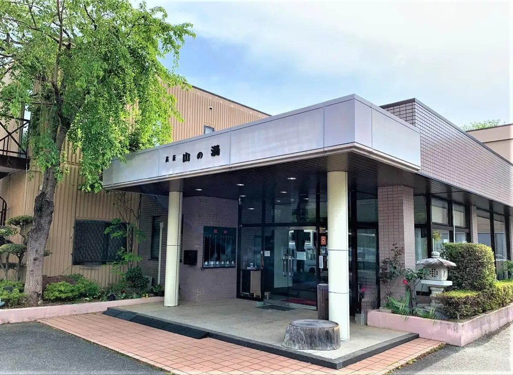
Stay
ウェルネスリゾート 天空の庭 天馬夢（旧 ヘルスリゾート 天空の庭 天馬夢）
Uerunesu Resort Tenku No Niwa Tenma Yume (Kyu Herusu Resort Tenku No Niwa Tenma Yume)
トレイルイン高萩（Ｔｒａｉｌｉｎｎ高萩）
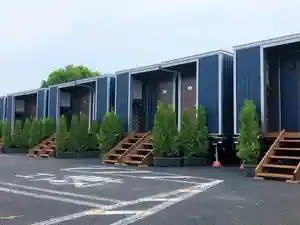
Toreiruin Takahagi (Trailinn Takahagi)
スマートワークホテル日立高萩
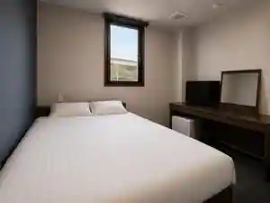
Sumatowaku Hotel Hitachi Takahagi
Hotel in Takako, Takahagi with Wi-Fi and parking.
旅舘高萩山の湯
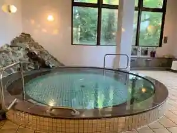
Ryokan Takahagi Yama No Yu
天馬夢（天空の庭）
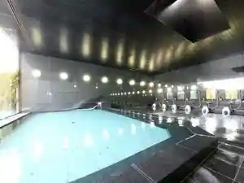
Tenma Yume (Tenku No Niwa)
Dining
自家製ラーメン アイリー
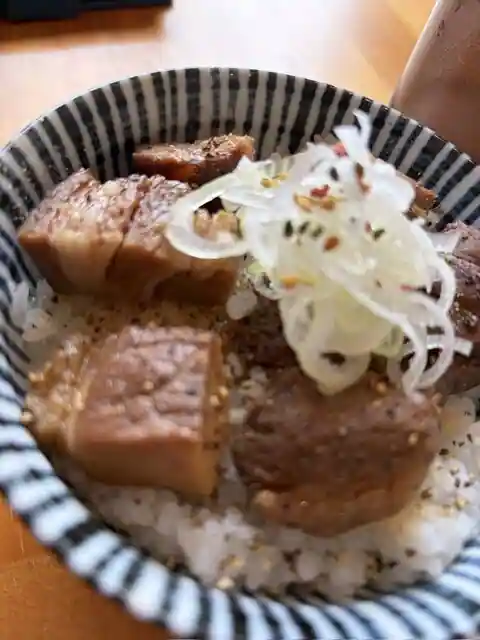
Jikasei Ramen Airi
ら麺はちに
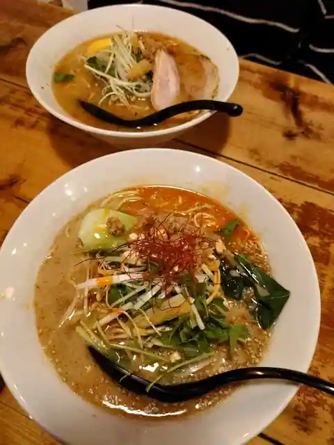
Ra Men Hachini
日本そば うらじ
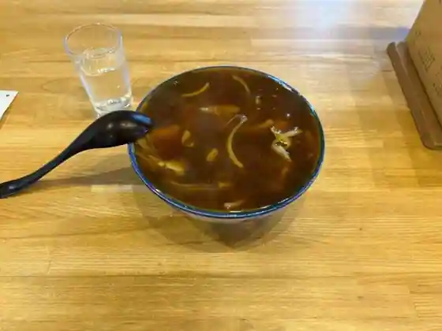
Nippon Soba Uraji
五浦ハム
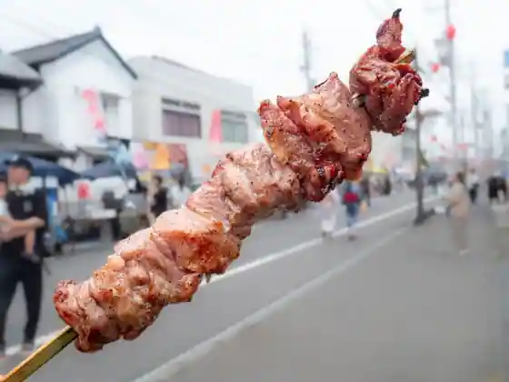
Itsura Hamu
レストラン ナマステ インド・ネパール料理
Restaurant Namasute Indo Neparu Ryori
魚天坊
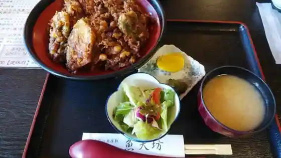
Sakana Bo
美留区
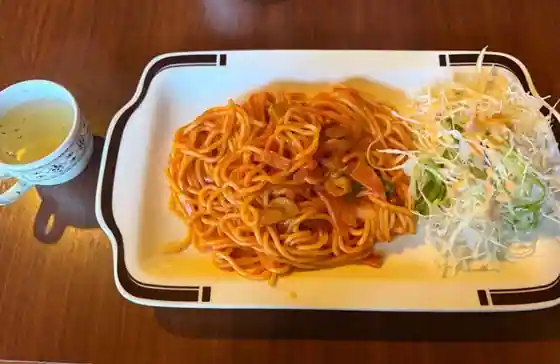
Bi Ryu Ku
詩恵里館
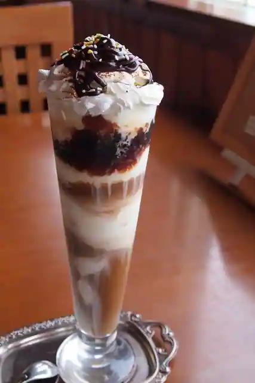
Shi Eri Kan
大衆割烹武子
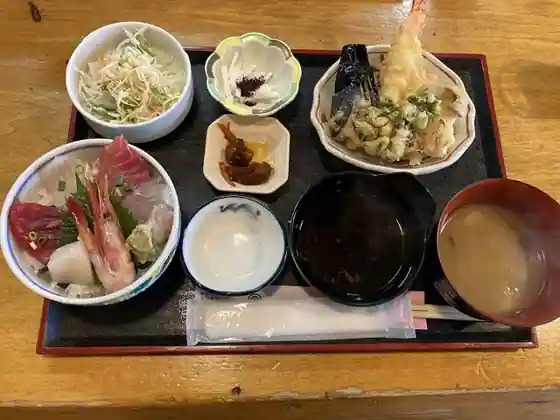
Taishu Kappo Takeko
永寿堂
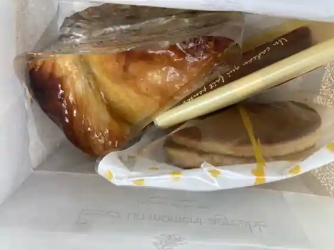
Nagatoshi Do
Honeybee Cafe
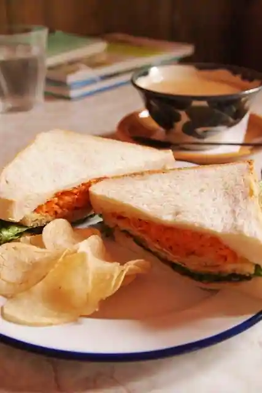
Honeybee Cafe
天津飯店
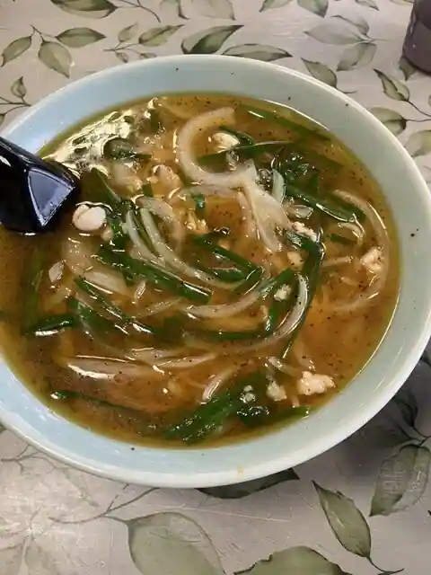
Tenshinhan
ラ・フォレ
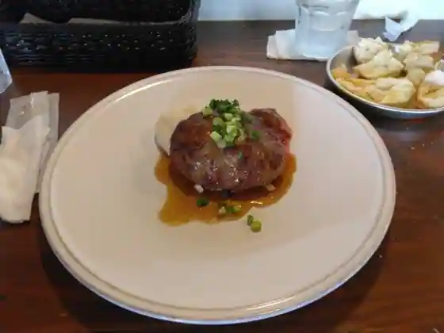
Ra Fore
麺屋 むすぶ
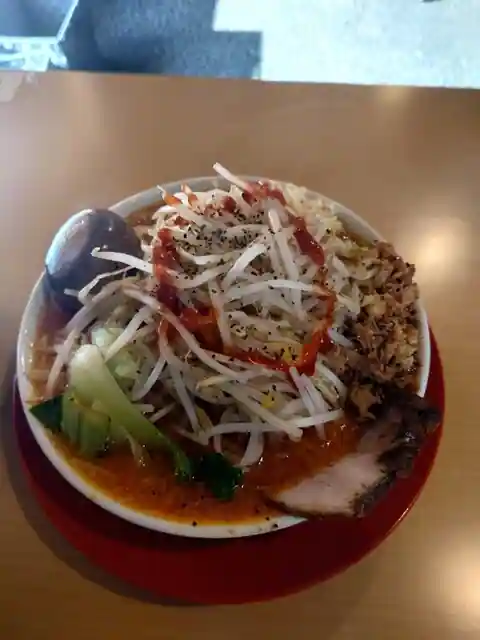
Men Ya Musubu
翠月
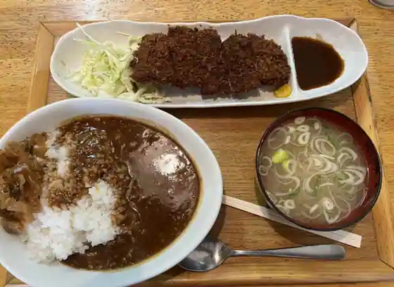
Sui Gatsu
食菜処 覺戀
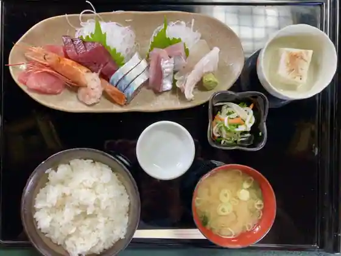
Shoku Na Tokoro Kaku Koi
お食事処 月乃家
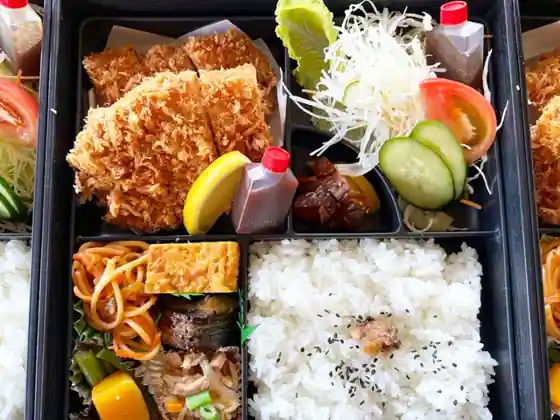
O Shokuji Tokoro Gatsu No Ie
山の湯
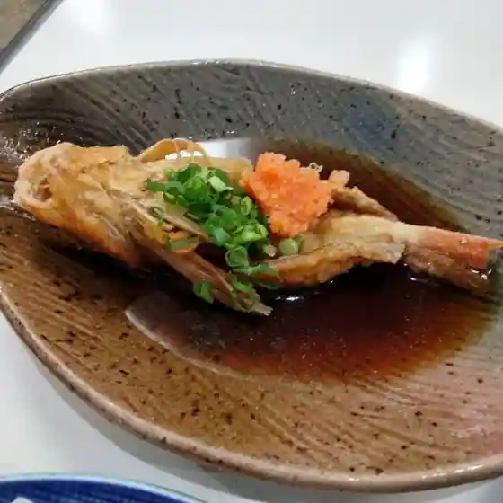
Yama No Yu
カフェレスト・ノースランド
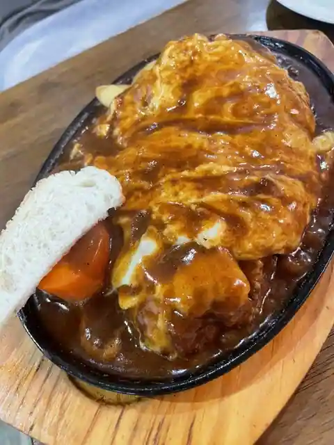
Cafe Resuto Nosurando
アトリエ小麦
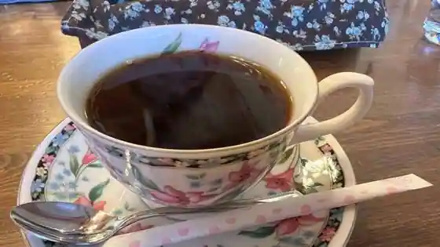
Atorie Komugi
たつご
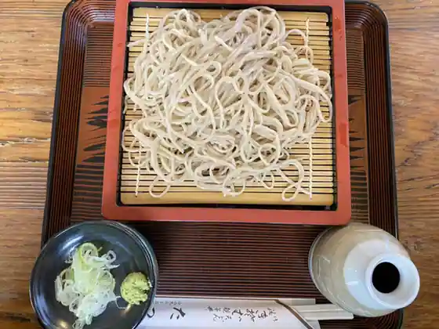
Tatsugo
清流の郷 花貫物産センター 食事処
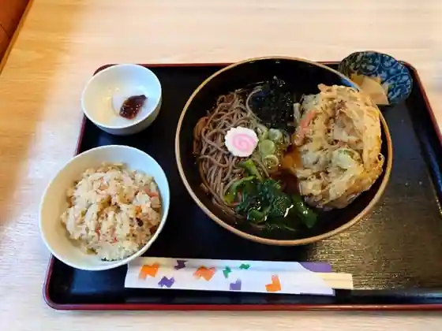
Seiryu No Sato Hananuki Bussan Center Shokuji Tokoro
泉屋
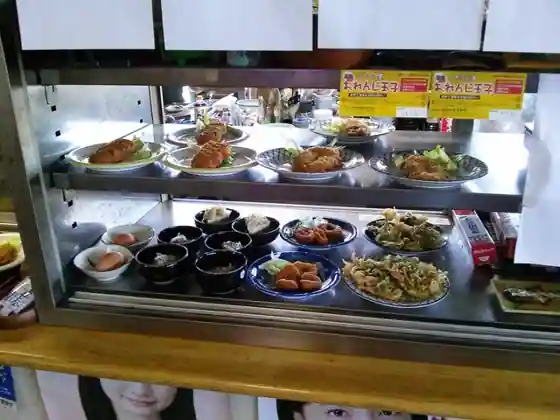
Sen'Oku
Sights
Hananuki Gorge
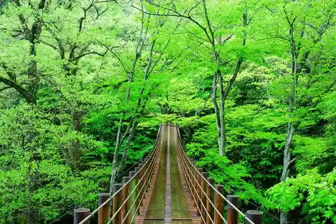
Taka Ko Obama Coast
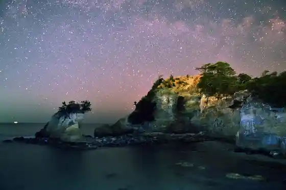
Takahagi Beach
Takahagi Fureai no Sato Fisshingueria
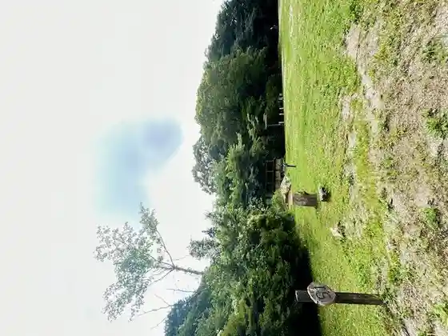
Takahagi Yama Baths
Hananuki Furutsu Hozuki (Hananuki Furutsu Hozuki Kurabu)
Otaki Sawa Campground
JA Hitachi Takahagi Nosambutsu Chokubai Tokoro
Sakura Uchu Park (Takahagi Eisei Tsushin Memorial Park)
Hozumi Ie House
Tenku no Niwa Tenma Yume
Joko Gei Art Museum
Akahama Coast
Hagi Village (Hagi Birejji)
Meiba Satogafuchi
Hananuki Dam
Yamato Forest Takahagi Sukautofiirudo
Seiryu no Sato Hananuki Bussan Center
Garden Miso Kura Tatsugo Miso
Horai Natto Furusato Jiman (Morita Toshio Shoten)
Hananuki Sakura Park
Hananuki Furusato Nature Park Center Campground
Megane Hashi (Hananuki Kawa Daiichi Hatsudensho Daisan Go Suiro Hashi)
Matsu Iwa Tera
Keyaki Taira Campground
Yachiyo Okoshi Takahagi Sembei (Nagatoshi Do)
Taka Ko Miso (Imagawa Miso Mise)
Otome Taki Fudo Taki
Takahagi Yufiirudo
Jijisugi Borupen (Yumemi Ru Dogu Tsuruya)
Taka Tomae Hama Coast
Hananuki Yuzu Miso (Furudokei)
Takiyama Gorge
Takahagi Hozuki (Ketsu no Mi WORKS)
Manyo no Michi
Koamigame
Hagimaro Kukkii (NPO Uisshu Happii Beru)
Folk History Museum
Matsuoka Joshi (Apurochi Plaza)